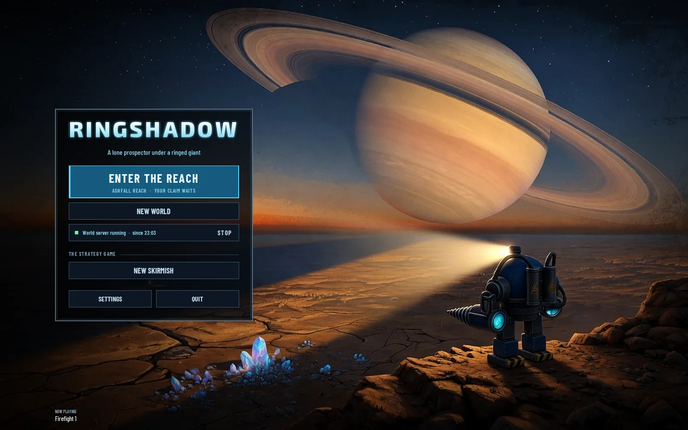
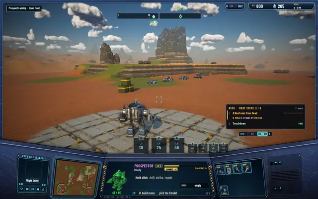
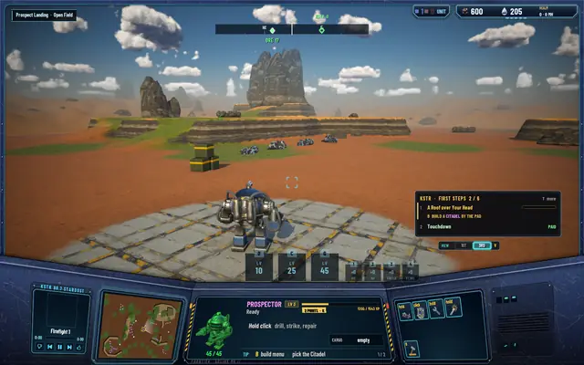
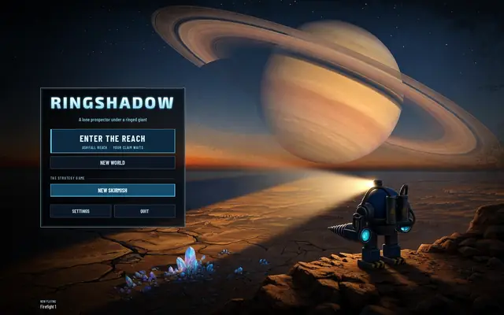

The world runs on after you quit
A world that lasts shouldn't stop when you close the game, and now it keeps going. The local server runs on your Mac, and the game picks it back up when you return.

In Ringshadow's online mode the game is only a client. The world lives in a separate server program, the same one a public world will run, and until today it quit with the game. Now it detaches. Quit, and the world's clock keeps turning, starfalls keep coming, the Foundry and the Lab finish their jobs, and the Brood's director keeps sending bugs to the places worth being. Start the game again and it finds the running server and reattaches.
A server that runs all the time had better be cheap. With nobody connected it slows down: the clock and timers tick twice a second, the regions wait, and it costs about 0.008% of one CPU core. With a pilot in the world it runs at the full 60 steps a second, about 0.3 to 0.5%.
If the Mac was off, there's nothing to run on, so the world catches up instead: on the next start the server works through the downtime, up to 24 hours of it. The same catch-up pays the mercenary prospectors you can hire at the Citadel.
The home screen shows "World server running" with the time it started, and a STOP button for when you want it off.
Quit, come back

Before quitting: the Prospector on the pad.
After a restart: same world, same pilot. The clouds moved on while the game was closed.- World server running, with STOP.

After STOP: the line is gone.


The network protocol didn't change. The tests stand at 467 core, 200 server and 70 network, all passing, and they never leave a server running behind them.